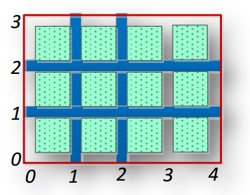

 Khu công nghiệp được chia thành các lô có hình vuông. Toàn bộ khu công nghiệp có dạng hình chữ nhật kích thước n lô theo chiều ngang và m lô theo chiều dọc. Người ta dự định sẽ xây dựng hệ thống đường bàn cờ đảm bảo mỗi lô đều có đường bao ở bốn phía. Điều này có nghĩa là Ban quản lý khu công nghiệp sẽ phải xây dựng n+1 đường ngang và m+1 đường dọc. Các đường ngang được đánh số từ 0 đến n từ dưới lên trên, các đường dọc được đánh số từ 0 đến m từ trái qua phải. Mỗi khi đường ngang hay đường dọc nào hoàn thành thì phải báo cáo ngay dưới dạng một dòng thông tin “H i” hay “V j”, cho biết đường ngang i hay đường dọc j đã hoàn thành. Dựa trên các thông tin này, Trưởng ban quản lý có thể xác định được các giá trị a0, a1, a2, a3 và a4, trong đó as là số lô có số đường bao quanh đã làm xong là s đường (s = 0, 1, 2, 3, 4).
Ví dụ, khi n = 3, m = 4 và các báo cáo là V 1, H 2, V 2 và H 1 thì a0= 0, a1= 2, a2= 5, a3= 4, a4= 1.
Dữ liệu nhập:
- Gồm ba số nguyên n, m, k, mỗi số cách nhau một khoảng trắng (1 ≤ n, m ≤ 100; k ≤ n+m+2).
- Trong k dòng tiếp theo mỗi dòng gồm một ký tự t và một số nguyên v cách nhau một khoảng trắng. t chỉ có hai trường hợp là 'H' - đường ngang, hay 'V' - đường dọc. v là thứ tự đường ngang hay đường dọc đã xây xong.
Dữ liệu xuất:
- Gồm 5 số nguyên a0, a1, a2, a3 và a4, mỗi số cách nhau một khoảng trắng.